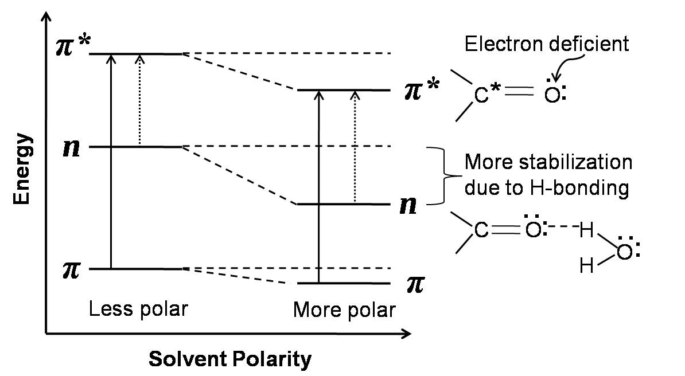
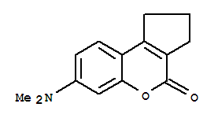

Spectrophotometric measurements can be carried out in gaseous, liquid or solution as well as solid state of a light absorbing analyte. Majority of UV-visible spectrophotometric measurements require the analyte(s) to be dissolved in an appropriate solvent. Water and many organic solvents such as ethanol, acetonitrile, cyclohexane, dimethylformamide (DMF), dimethylsulfoxide (DMSO), etc. are used for this purpose. Solventsshould dissolve the sample well, be optically transparent (not absorb incident radiation), and chemically inert and pure.Although solvents should be, in principle, optically transparent, most of the solvents absorb significant amount of light especially in the UV regions of electromagnetic spectrum. Therefore, one should choose a solvent that allows optimal transmission of the light in the wavelength range of interest. Further, any finite absorption of light by the solvent in the wavelength range of interest should be subtracted as a blank or reference spectrum from the analyte spectrum.
It has been observed that the positions, intensities and shapes of the absorption spectral bands of light absorbing molecules depend on the nature of the solvent and often on the solvent polarity. Based on polarity scales, solvents are classified as polar and nonpolar solvents. Water, ethanol, acetonitrile, diethyl ether, etc. are a few examples of polar solvents. On the other hand, carbon tetrachloride, nhexane, cyclohexane, benzene, dioxane, etc. are a few examples of nonpolar solvents. Polar solvents like water and alcohol tend to obliterate the fine spectral details of the absorbing species unlike nonpolar ones. Therefore, a nonpolar solvent like n-hexane should be used where the fine spectral details are required as in the case of qualitative analysis.

To study the effects of solvents on the UV-visible absorption spectra of a molecule.

Solvent effects are sum of the bulk solvent properties like polarity, dielectric property, dispersive-induction-polarization interactions, viscosities and/or specific solute-solvent interactions. In the absence of inter-molecular hydrogen bond, the spectral shifts are mainly sensitive to the solvent polarity. Solvent-solute interactions in the cases of non-polar solvents like saturated hydrocarbons are negligible. Therefore, the absorption spectrum of a solute molecule in these nonpolar solvents shows fine spectral details similar to that in pure gaseous state.
We know that the electronic transitions modify the charge distribution of the absorbing molecule. Therefore, depending on the solvent polarity and kind of transition, solvent-solute interactions vary which in turn determine the energies of the ground and excited states of the light absorbing molecule. This affects both the peak position (λmax) and absorptivity (ε) of the absorbing molecule. The absorptivity, a characteristic of the absorbing substance, is a useful quantity that gives us idea about the transition probabilities in the molecules and the effective light capture area (the cross-section for light absorption) of the species. If the chromophore involved in the transition is more polar in its ground state than in its excited state, then the ground state is more stabilized than the excited state by a more polar solvent due to solvation. Chromophores with n→π* or n→σ* transitions exhibit such behavior. The solvent molecules are oriented around the solute (chromophore) molecules to fit with the ground state charge distribution of the solute molecules. Hydrogen bonding or polar solvents interact more strongly with unshared electron pairs of the ground state molecule. On excitation, the charge distribution in such systems changes markedly and therefore, the solvent molecules would not have position and orientation to interact with the excited state charge distribution. Thus, the ground state of such solute molecules are more stabilized than the excited state. This widens the energy gap between the ground and excited states with increasing polarity of the solvents (Figure 1). Therefore, more energy is required for the n→π*kind of electronic transition with increasing solvent polarity. This results in the shift of spectral peak positions towards shorter wavelength. On the other hand, if the excited state of the chromophore is more polar with respect to the ground state, then the excited state will be more solvated and more stabilized by a more polar solvent. This kind of property is observed in the case chromophores with π →π* transitions. The π electron density is equally distributed in the ground state and the C nuclei are shielded whereas in the π* excited state the C nuclei become electron deficient due to the electron promotion. This favors stronger interaction of the excited state molecule with more polar or hydrogen bonding solventsand thereby stabilizing the excited state more than the ground state. This decreases the energy gap between the excited and the ground states with increasing solvent polarity (Figure 1) which results in shift of absorption peak positions towards longer wavelengths. We may recall that a shift of the absorption peak position (λmax) towards shorter wavelengths is called a blue shift or hypsochromic effect. On the other hand, a shift of the λmax towards longer wavelength is termed as the red shift or bathochromic effect. When there is an increase in the absorption intensity,(i.e., absorbance) the effect is termed as hyperchromic effect. If there is a decrease in the absorption intensity, the effect is termed as hyporchromic effect.

Figure1: Effect of solvent polarity on n→π* and π →π* transitions.
The solvent dependent spectral shifts that originate from the interaction between the chromophore and the entire set of surrounding solvent molecules and do not involve any chemical interactions or specific solvent-chromophore interactions are referred to as “general solvent effects”. In such cases, the energy between the ground state and excited state is affected by the dipole interaction between the solvent and the chromophore which is function of the solvent refractive index and dielectric constant. Taking only the continuum dielectric properties (the dielectric constant and the refractive index) as a measure of the solvation energy, energy of absorption or λmax is found to be related to the solvent polarity function, ∆f. The polarity function can be calculated from
\begin{equation} ∆f = [(D-1)/(2D+1)] - [(n^2 - 1)/(2n^2 + 1)] \end{equation} where D is the dielectric constant and n is the refractive index of the solvent. Here absorptions of coumarin138have been studied in a number of polar and nonpolar solvents, namely cyclohexane, dioxane, acetonitrile, ethanol and ethylene glycol, to demonstrate the solvent effect.

Figure 2: Molecular structure of coumarin138.
Table 1.Solvent properties and maximum absorbances and corresponding absorption wavelengths (λmax) of coumarin138.
|
Solvent |
Refractive Index (n) |
Dielectric Constant (D) |
∆f |
Abs at λmax
|
λmax (nm) |
|
Cyclohexane |
1.424 |
2.01 |
|
|
|
|
Dioxane |
1.420 |
2.21 |
|
|
|
|
Acetonitrile |
1.342 |
35.94 |
|
|
|
|
Ethanol |
1.359 |
23.40 |
|
|
|
|
Ethylene Glycol |
1.429 |
38.69 |
|
|
|

- Prepare five 1 × 10-5 M coumarin-138 solutions in solvents: cyclohexane, dioxane, acetonitrile, ethyl alcohol and ethylene glycol. Such dilute solutions can be prepared via dilution from 1 × 10-4 M stock solutions in respective solvents. Here solutions in different solvents are shown on a solvent selection bar.
- The absorption measurements with all the solutions are carried out one after another as follows.
- To take a particular solution, click on the appropriate solvent on the solvent selection bar and then click on the volumetric flask containing the solution.
- Click on the quartz cuvette (path length, 1 cm ×1 cm) to take it to the instrument table.
- Click on the glass Pasteur pipette to collect about 3 mL of the experimental solution which will be transferred into the quartz cuvette.
- Click on the pipette to draw the solution into it.
- Click on the pipette to take it out of the volumetric flask.
- Click on the pipette again to transfer the solution into the cuvette. To start the absorption spectral scan, click on the pop-up “Start Absorption Measurement”.
- Turn on the spectrophotometer clicking on the power button. In real operation, it takes approx. 30 min for initialization of the instrument.
- Open the lid of the sample chamber of the spectrophotometer by clicking on the lid for placing the sample in the cell-holder. Click on the cuvette to place it in the sample holder. One has to use pure solvent as the sample blank or reference in this measurement. Here a double beam spectrophotometer is shown.
- Close the lid of the sample chamber by clicking on it.
- Open the measurement set-up screen by clicking on the absorption measurement icon on the computer monitor.
- On the screen, enter the wavelength range. Start: 430 nm End: 275 nm. In real operation, the wavelength range of incident light for the sample is chosen and the wavelength scan is run via the accompanied computer software. One can run the scan in absorbance (A) or transmittance (%T) mode.
- Click on the green Start button on the measurement set-up screen to run the wavelength scan. Observe the wavelength scan.
- Click on Close button when spectral scan is complete. In real operation, the scan data are stored in the computer. The instrument stores data and therefore asks for the Sample File name. One enters a file name to save the data.
- To take the cuvette out of the sample chamber, first click on the sample chamber lid to open it and then on the cuvette. Click on the lid of the sample chamber to close it.
- Click on Reset button to start over the measurements.
- Repeat the Absorption measurements with all the solvents by clicking on the solvent selection bar first and then on the volumetric flask containing the solution.
- Collect all data by clicking on the Data tab.
- Examine UV-visible absorption spectra with different solvents.
- Find out the maximum absorption wavelengths and corresponding absorbance values for all the solvents and tabulate them along with the solvent dielectric constants and refractive indices values.
- Is there a relationship or trend between solvent polarity and the wavelength of maximum absorbance?
- Discuss your observations.


Pre-Experiment
- Why do polar solvents obliterate the fine spectral structures in an absorption band?
- In which state is a molecule generally more polar – when (i) pi molecular orbital is full or (ii) one pi electron is excited to pi antibonding molecular orbital?
- Which solvent between cyclohexane and ethanol has higher dipole moment?
- When a chromophore binds to proteins, the binding site is generally more hydrophobic than the solution. Then, what kind of shift do you expect to observe in the absorption peak position compared to the peak observed when the chromophore is free in solution?
Post-Experiment
- What are the cut-off wavelengths for the solvents used in this experiment?
- Do you observe any change in the form of the absorbance bands while moving from nonpolar to polar solvents?
- What kinds of possible electronic transitions do you expect to observe in coumarin-138?
- Which parameter between ‘solvent polarity function’ and dielectric constant show better correlation with the peak positions?

- K. Chandrasekhar, L. R. Naik, H. M. Suresh Kumar, and N. N. Math, “Steady-state absorption and fluorescence study: Dipole moments of coumarins.” Indian Journal of Pure & Applied Physics 2006, Vol. 44, pp. 292-299.
- Barik, N. K. Goel, K. I. Priyadarsini and H. Mohan, “Effect of Deuterated Solvents on the Excited State Photophysical Properties of Curcumin” Journal of Photoscience 2004, Vol. 11(3), pp. 95-99.
- http://nsdl.niscair.res.in/bitstream/123456789/793/1/spectroscopy+of+organic+compounds.pdf
- B. Valeur, “Molecular Fluorescence: Principles and Applications”, 2002, WILEY-VCH Verlag GmbH, 69469, Weinheim, Germany.
- J. R. Albani, Principles and Applications of Fluorescence Spectroscopy, 2007, Blackwell Science Science Ltd, Oxford, UK.
- F. A. Settle (Editor), ‘Handbook of Instrumental Techniques for Analytical Chemistry”, Pearson Education Limited (2004).
- D. Harvey, “Modern Analytical Chemistry”, McGraw-Hill Education (2000).
- T. Owen, “Fundamentals of modern UV-visible spectroscopy”, Primer, Agilent Technologies (2000). “Fundamentals of UV-visible spectroscopy: Workbook”, Publication Number 5980-1398E, a primer from Agilent Technologies (2000).
 Experiments
Experiments Feedback
Feedback